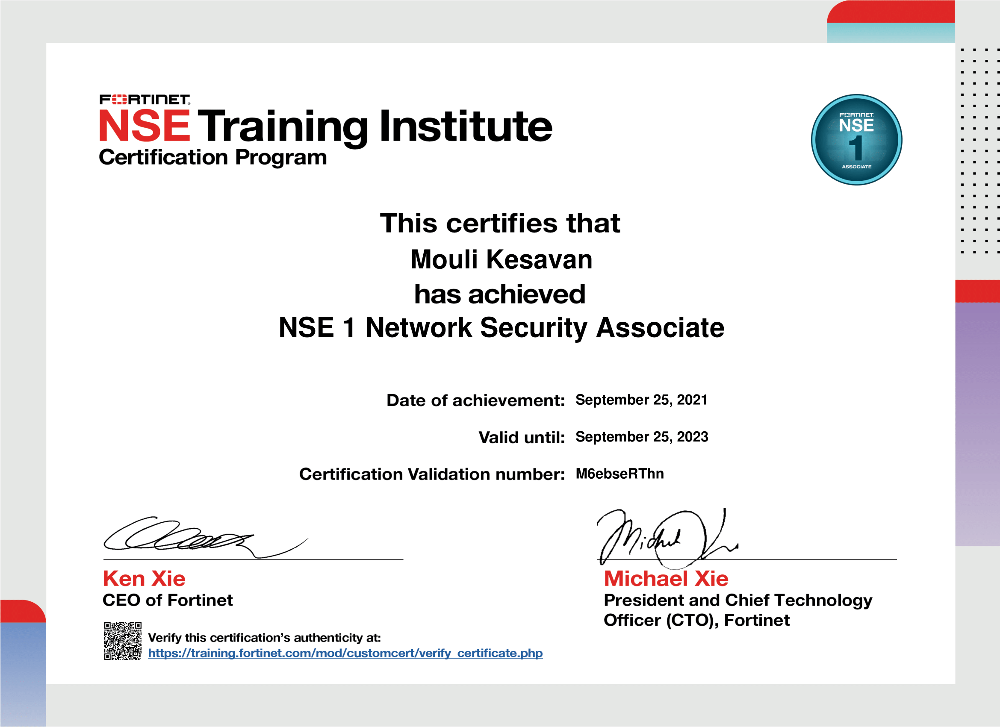
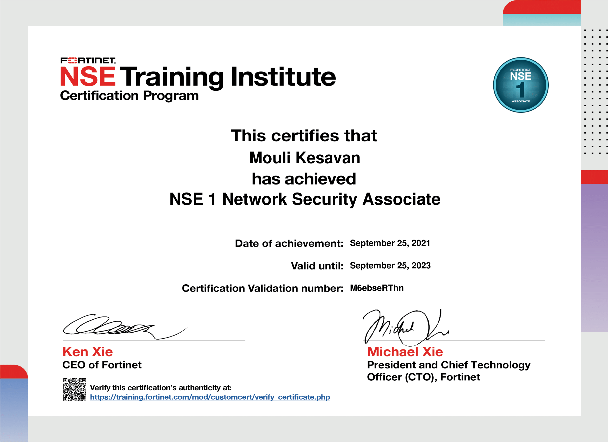
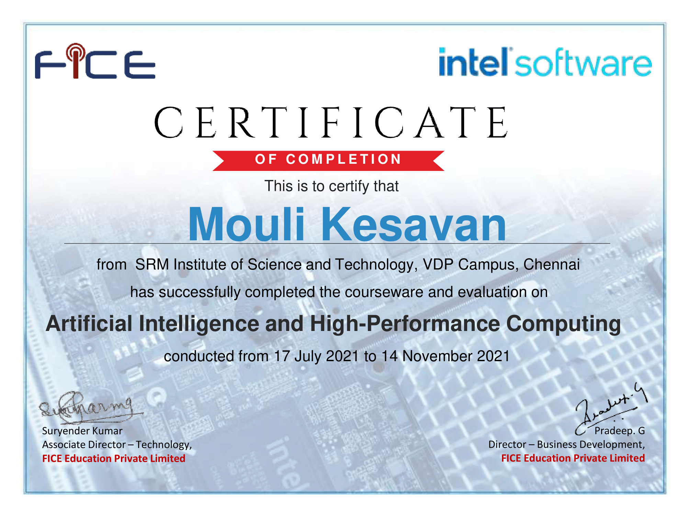
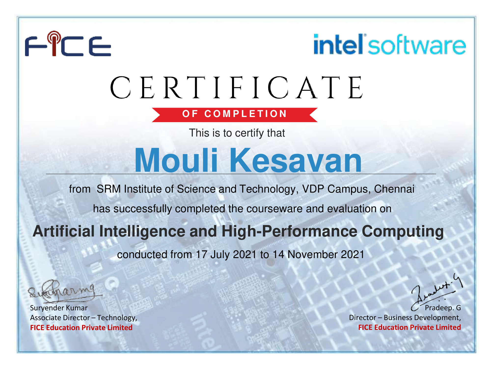

My journey into cybersecurity started way back in 11th grade — but I wasn't even in tech. I was a biology major, surrounded by friends in Computer Science. I’d hear them talk about their lab sessions and what they coded that day. My curiosity got the better of me, so I borrowed their C++ book during summer break… and failed miserably.
But that “failure” became my turning point. My CS friends started teaching me, and over time, I fell in love with the logic. I ended up dropping my dream of becoming a doctor — even after receiving a medical college seat — and chose Computer Science Engineering instead. At first, I was lost. But I started learning Python on my own, and then came the workshop that changed everything: Ethical Hacking.
That workshop was a game-changer. I got introduced to phishing, CTFs, red teaming, blue teaming — and something clicked. I found security fascinating. As semesters passed, I was introduced to Cisco Packet Tracer in my networking modules. But I didn’t stop there.
I dove deep into networking and ended up building two major projects: one was a SOHO network with VLANs, and the other a full-scale university network infrastructure.
Post-COVID, I doubled down. I used lockdown to self-study and earn my CEH (Certified Ethical Hacker) — something that still feels like one of my proudest moments.
At the end of my undergrad, I knew I wanted more. So I applied to one of the top universities in the UK for cybersecurity: The University of Birmingham. And it delivered. From pentesting and malware analysis to digital forensics and secure systems — every module challenged and shaped me.
One project I’ll never forget was when we were asked to pick a smart device and perform a full vulnerability assessment. We picked the toughest one: the Amazon Alexa Echo Show. We broke it down, assessed its network behavior, firmware quirks, and more. You can read that deep dive here.
In our malware module, we studied how malicious code is built, unpacked, and analyzed — both statically and dynamically. That led to another detailed project where I dissected malware samples and documented the process. Check it out here.
Towards the end, we got into firmware and hardware exploitation — including UART interfaces and binary extraction. I wrote about that experience as well, and it really opened my eyes to embedded security.
After graduating with merit, I knew my next step: going all-in on blue teaming. So I built a full SOC lab environment from scratch and started launching simulated attacks just to study how to detect and respond. That whole experience turned into one of my most-read blogs: Building a Real-World SOC Lab on GCP.
That’s my journey. And these blogs aren’t just technical documentation — they’re chapters of my growth. If you're someone just starting out or looking to dive deeper, I hope you find them useful.
 

 
